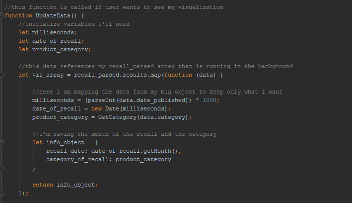

This app was my first experience working with information from an API. The Healthy Canadians API is not the simplest API to use, but it is a useful dataset to practice on. It has search functionality, built-in paging and multiple filters to sort by. The finished app can search the whole database or within specific categories, list all recalls in a given category, page through results and change the number of results per page.
As an additional part of this task, I was required to to visualize the data in a meaningful way, so I opted to show it in the form of a heat map that shows type of recall by month. To get this data, I had to auto-poll the API and save the information coming back.
The minor goals of this project were to become familiar with JavaScript array functions, specifically array.forEach, array.map, array.reduce, and array.filter. These tools are invaluable both when using vanilla JS and in frameworks like React. The above code sample is of a map function that I had to run on the API data, since it gave me way more information than I needed to make my heat map.
The date information came back in a non-standard format so I had to convert it to miliseconds before I could convert it to the JavaScript date object and pull out the month. My final product was a single-page app with two distinct sections, the search page and the heat map page. This project has a lot of moving parts and I have referred back to it many times.